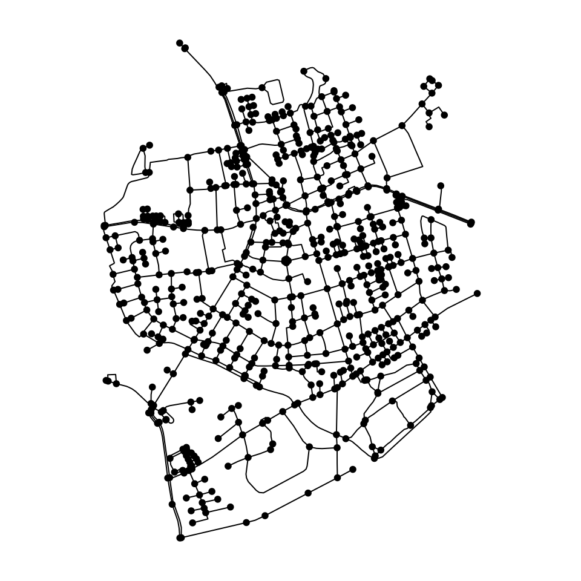
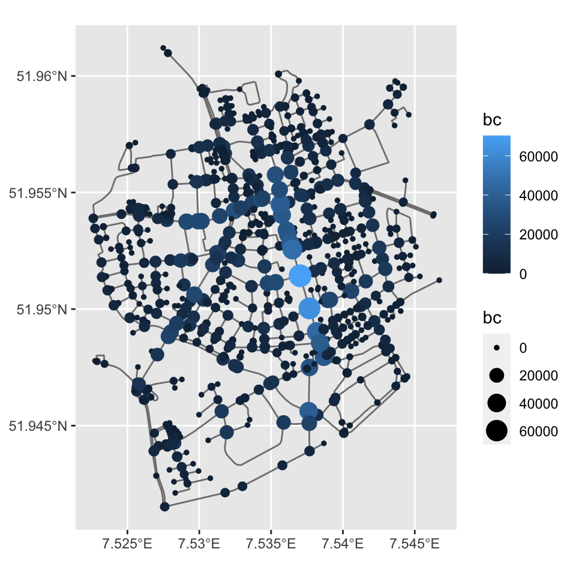
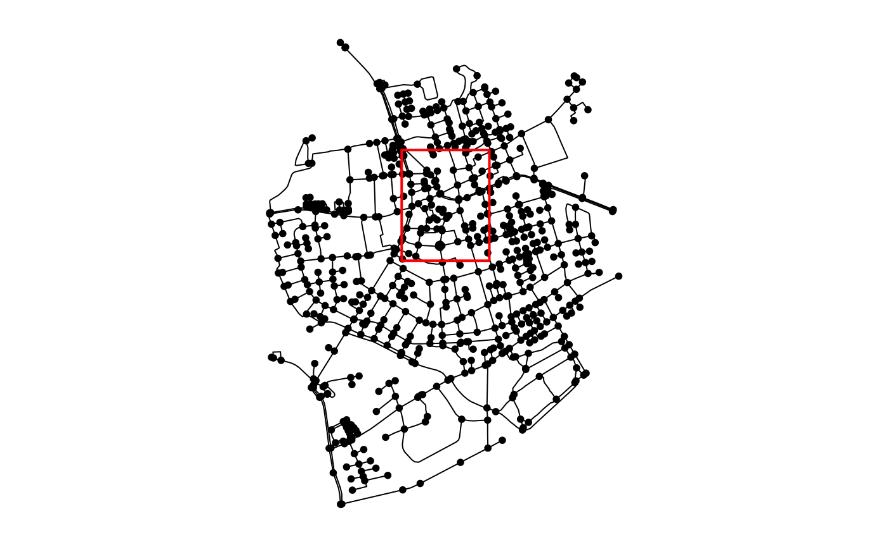
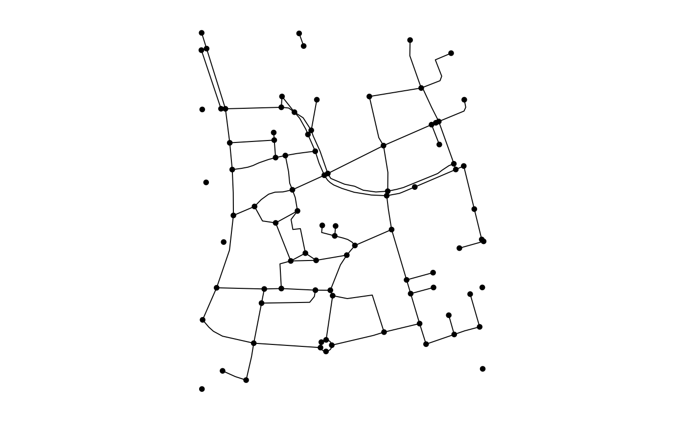

intro.RmdThanks to active developer and user communities, R is becoming an increasingly popular language for interactive geographic data analysis. Large steps forward include the release and continued evolution of sf, which provides classes for representing and manipulating spatial vector data (points, lines and polygons). Unlike its predecessors, sf is compatible with the popular data science oriented packages that form the tidyverse, most notably the data manipulation toolbox dplyr, and more generally with the concept of tidy data.
R is also well-suited for network analysis, thanks to the R interface of the igraph library. The tidygraph package extends igraph into the domain of the tidyverse, enabling dplyr compatibility by treating a graph as a collection of two tidy data frames describing respectively the nodes and edges.
Given the strength of R in spatial and network analysis, one would expect it to be an ideal language for analysis of geospatial networks. Geospatial networks are simultaneously graph and spatial objects, with nodes and edges embedded in geographic space. Well known examples include transport networks, river basins, power grids, ecological networks and geolocated social networks.
Although several R packages exist that address geospatial networks, they often focus on a specific application within the broader domain of geospatial network analysis, or complicate tidyverse compatibility, for example by using S4 classes or relying on the older sp package for spatial data handling. Hence, at present, no generally applicable, tidyverse compatible classes exist for geospatial network data, representing a gap in R’s spatial and network analysis ecosystems (see the gRaphical Models and Spatial task views). sfnetworks is created to fill this gap, and form a connecting edge between the two worlds.
The sfnetworks package is still in very active development, and this vignette only describes the first part of our work. Therefore, the package is also not on CRAN yet. Install it from GitHub using the remotes package in R.
remotes::install_github("luukvdmeer/sfnetworks")The core of the sfnetworks package is the sfnetwork data structure. This is a class that subclasses tidygraph’s tbl_graph, which itself subclasses igraph. Therefore, sfnetwork objects are recognized by all network analysis algorithms that igraph offers, as well as by the tidy wrappers that tidygraph has built around them.
The philosophy of a tbl_graph is best described by the following paragraph from the tidygraph introduction: “Relational data cannot in any meaningful way be encoded as a single tidy data frame. On the other hand, both node and edge data by itself fits very well within the tidy concept as each node and edge is, in a sense, a single observation. Thus, a close approximation of tidyness for relational data is two tidy data frames, one describing the node data and one describing the edge data.”
Since sfnetwork subclasses tbl_graph, it shares the same philosophy. However, it extends it into the domain of geospatial data analysis, where each observation has a location in geographical space. For that, it brings sf into the game. An sf object stores the geographical coordinates of each observation in standardized format in a geometry list column, which has a Coordinate Reference System associated with it. Thus, in sfnetworks, we re-formulate the last sentence of the paragraph above to the following. “A close approximation of tidyness for relational geospatial data is two sf objects, one describing the node data and one describing the edge data.”
We do need to make a note here. In a geospatial network, the nodes always have coordinates in geographic space, and thus, are always described by an sf object. The edges, however, can also be described by just the indices of its end-nodes. This still makes them geospatial, because they start and end at specific points in space, but the spatial information is not explicitly attached to them. Both representations can be useful. In road networks, for example, it makes sense to explicitly draw a line geometry between two nodes, while in geolocated social networks, it probably does not. An sfnetwork supports both types. It can either have edges with a geometry stored in a geometry list column, described by an sf object, or edges that only refer to node indices, described by a regular data frame. We refer to these types of edges as respectively spatially explicit edges and spatially implicit edges. In this vignette, we mainly focus on the first type.
An sfnetwork object can be constructed with the sfnetwork() function. This function expects the nodes and edges data as arguments, meeting the following requirements:
sf, solely containing features with POINT geometries.sf, solely containing features with LINESTRING geometries. Otherwise, they can be a data.frame or tibble. In any case, they should contain the indices of their end-nodes in a to and from column, or in the two first columns, as integers. Every node index refers to the position (i.e. the rownumber) of the node in the nodes table.Additionally, one can set the directed argument, defining if the created network should be directed or not. This defaults to TRUE.
See below a small toy example.
p1 = st_point(c(7, 51))
p2 = st_point(c(7, 52))
p3 = st_point(c(8, 52))
nodes = st_as_sf(st_sfc(p1, p2, p3, crs = 4326))
e1 = st_cast(st_union(p1,p2), "LINESTRING")
e2 = st_cast(st_union(p1,p3), "LINESTRING")
e3 = st_cast(st_union(p2,p3), "LINESTRING")
edges = st_as_sf(st_sfc(e1, e2, e3, crs = 4326))
edges$from = c(1, 1, 2)
edges$to = c(2, 3, 3)
sfnetwork(nodes, edges, directed = FALSE)#> # A sfnetwork with 3 nodes and 3 edges
#> #
#> # CRS: EPSG:4326
#> #
#> # An undirected simple graph with 1 component
#> # and spatially explicit edges
#> #
#> # Node Data: 3 x 1 (active)
#> # Geometry type: POINT
#> # Dimension: XY
#> # Bounding box: xmin: 7 ymin: 51 xmax: 8 ymax: 52
#> x
#> <POINT [°]>
#> 1 (7 51)
#> 2 (7 52)
#> 3 (8 52)
#> #
#> # Edge Data: 3 x 3
#> # Geometry type: LINESTRING
#> # Dimension: XY
#> # Bounding box: xmin: 7 ymin: 51 xmax: 8 ymax: 52
#> from to x
#> <int> <int> <LINESTRING [°]>
#> 1 1 2 (7 51, 7 52)
#> 2 1 3 (7 51, 8 52)
#> 3 2 3 (7 52, 8 52)
Converting foreign objects into an sfnetwork can be done with the as_sfnetwork() function. Every object that fulfills both of the following requirements is supported by default:
tbl_graph or convertible to a tbl_graph with as_tbl_graph(). See the tidygraph documentation for all objects that are supported.sf object with st_as_sf().Additionally, as_sfnetwork() has a method that directly converts an sf object into a network. Of course, a single sf object does not contain any explicit network information, so assumptions have to made. This functionality should therefore be seen as a convenience function, and will not be suited for all possible use-cases. It works as follows:
sf object with LINESTRING geometries: the lines are considered edges, and nodes are created at the endpoints of the lines. Identical endpoints become one single node. This addresses the use-case that was presented in this r-spatial blogpost.sf object with POINT geometries: the points are considered nodes, and edges are created between them, in a sequential way. With that we mean: node 1 will be connected to node 2, node 2 to node 3, et cetera. This addresses the use-case that was presented in this stackoverflow thread.See below an example with the Roxel dataset (which comes with sfnetworks and is a cleaned extract of OpenStreetMap roads in Münster-Roxel).
#> Simple feature collection with 851 features and 2 fields
#> geometry type: LINESTRING
#> dimension: XY
#> bbox: xmin: 7.522594 ymin: 51.94151 xmax: 7.546705 ymax: 51.9612
#> CRS: EPSG:4326
#> # A tibble: 851 x 3
#> name type geometry
#> <fct> <fct> <LINESTRING [°]>
#> 1 Havixbecker S… residen… (7.533722 51.95556, 7.533461 51.95576)
#> 2 Pienersallee seconda… (7.532442 51.95422, 7.53236 51.95377, 7.53209 51.953…
#> 3 Schulte-Bernd… residen… (7.532709 51.95209, 7.532823 51.95239, 7.532869 51.9…
#> 4 NA path (7.540063 51.94468, 7.539696 51.94479, 7.539466 51.9…
#> 5 Welsingheide residen… (7.537673 51.9475, 7.537614 51.94562)
#> 6 NA footway (7.543791 51.94733, 7.54369 51.94686, 7.543751 51.94…
#> 7 NA footway (7.54012 51.94478, 7.539931 51.94514)
#> 8 NA path (7.53822 51.94546, 7.538131 51.94549, 7.538027 51.94…
#> 9 NA track (7.540063 51.94468, 7.540338 51.94468, 7.540591 51.9…
#> 10 NA track (7.5424 51.94599, 7.54205 51.94629, 7.541967 51.9463…
#> # … with 841 more rows
(net = as_sfnetwork(roxel, directed = FALSE))#> # A sfnetwork with 701 nodes and 851 edges
#> #
#> # CRS: EPSG:4326
#> #
#> # An undirected multigraph with 14 components
#> # and spatially explicit edges
#> #
#> # Node Data: 701 x 1 (active)
#> # Geometry type: POINT
#> # Dimension: XY
#> # Bounding box: xmin: 7.522622 ymin: 51.94151 xmax: 7.546705 ymax: 51.9612
#> geometry
#> <POINT [°]>
#> 1 (7.533722 51.95556)
#> 2 (7.533461 51.95576)
#> 3 (7.532442 51.95422)
#> 4 (7.53209 51.95328)
#> 5 (7.532709 51.95209)
#> 6 (7.532869 51.95257)
#> # … with 695 more rows
#> #
#> # Edge Data: 851 x 5
#> # Geometry type: LINESTRING
#> # Dimension: XY
#> # Bounding box: xmin: 7.522594 ymin: 51.94151 xmax: 7.546705 ymax: 51.9612
#> from to name type geometry
#> <int> <int> <fct> <fct> <LINESTRING [°]>
#> 1 1 2 Havixbecker S… residen… (7.533722 51.95556, 7.533461 51.95576)
#> 2 3 4 Pienersallee seconda… (7.532442 51.95422, 7.53236 51.95377, 7.5…
#> 3 5 6 Schulte-Bernd… residen… (7.532709 51.95209, 7.532823 51.95239, 7.…
#> # … with 848 more rows
class(net)
#> [1] "sfnetwork" "tbl_graph" "igraph"More methods will be added in the near future, such that other spatial network objects that exist in R can be directly converted into an sfnetwork, e.g. dodgr_streetnet from the dodgr package and SpatialLinesNetwork from the stplanr package.
Just as with a tbl_graph, one of the graph elements of an sfnetwork (i.e. nodes or edges) can be activated, and all subsequent computations will be performed on that active element. By default, the nodes are the active element. This can be changed with the activate() verb, that is borrowed from tidygraph.
Thanks to activate(), a lot of data manipulation tools can be directly applied to the network. If you want to do something that goes further, you can always extract the active element as an sf object, simply by calling st_as_sf() - in the case of spatially implicit edges, extract them with as_tibble() instead.
#> Simple feature collection with 851 features and 4 fields
#> geometry type: LINESTRING
#> dimension: XY
#> bbox: xmin: 7.522594 ymin: 51.94151 xmax: 7.546705 ymax: 51.9612
#> CRS: EPSG:4326
#> # A tibble: 851 x 5
#> from to name type geometry
#> <int> <int> <fct> <fct> <LINESTRING [°]>
#> 1 1 2 Havixbecker… reside… (7.533722 51.95556, 7.533461 51.95576)
#> 2 3 4 Pienersallee second… (7.532442 51.95422, 7.53236 51.95377, 7.532…
#> 3 5 6 Schulte-Ber… reside… (7.532709 51.95209, 7.532823 51.95239, 7.53…
#> 4 7 8 NA path (7.540063 51.94468, 7.539696 51.94479, 7.53…
#> 5 9 10 Welsingheide reside… (7.537673 51.9475, 7.537614 51.94562)
#> 6 11 12 NA footway (7.543791 51.94733, 7.54369 51.94686, 7.543…
#> 7 13 14 NA footway (7.54012 51.94478, 7.539931 51.94514)
#> 8 8 10 NA path (7.53822 51.94546, 7.538131 51.94549, 7.538…
#> 9 7 15 NA track (7.540063 51.94468, 7.540338 51.94468, 7.54…
#> 10 16 17 NA track (7.5424 51.94599, 7.54205 51.94629, 7.54196…
#> # … with 841 more rows
The sfnetworks package does not (yet?) include advanced visualization options. However, a simple plot method is provided, which gives a quick view of how the network looks like.

For advanced visualization, we encourage to extract nodes and edges as sf objects, and use one of the many ways to map those in R, either statically or interactively. Think of sf’s default plot method, ggplots geom_sf(), tmap, mapview, et cetera.
Since it subclasses tbl_graph, sfnetwork objects are recognized by all network analysis algorithms that igraph offers, as well as by the tidy wrappers that tidygraph has built around them.
A small example is the calculation of the betweenness centrality for each node:
library(ggplot2)
net_c = net %>%
activate("nodes") %>%
mutate(bc = centrality_betweenness())
ggplot() +
geom_sf(data = activate(net_c, "edges") %>% st_as_sf(), col = 'grey50') +
geom_sf(data = activate(net_c, "nodes") %>% st_as_sf(), aes(col = bc, size = bc))
There is a large amount of available algorithms, ranging from simple type queries to advanced community detection. To keep this vignette within an acceptable length, we will not cover all graph algorithms that can be used, but instead refer to the tidygraph introduction.
Not only can sfnetwork objects be used in graph algorithms, they are also recognized by various spatial analytical functions of sf. Internally, this works as follows: the active element is converted to an sf object, on which the function is applied. Depending on the function, the results are merged back into the network, and an sfnetwork object is returned, or simply the raw output of the sf function is returned.
Some of the functions have effects also outside of the active element: when nodes are removed from the network, the edges terminating at those nodes will be removed too. This behavior is not symmetric: when removing edges, the nodes that are at the start or end of those edges remain, even if they are not adjacent to any other edge. This is because in graph theory, edges can never exist without end-nodes, while nodes can exist without having adjacent edges.
All supported sf functions that are of the form f(x,y) also accept an sfnetwork as y parameter. Just as for object x, the active element of the network y will internally be converted to an sf object, and used as such inside the function.
Networks can be filtered by a spatial predicate, using st_filter. For example, we want to only keep those nodes that intersect with a given polygon:
p1 = st_point(c(7.53173, 51.95662))
p2 = st_point(c(7.53173, 51.95190))
p3 = st_point(c(7.53778, 51.95190))
p4 = st_point(c(7.53778, 51.95662))
rect = st_multipoint(c(p1, p2, p3, p4)) %>%
st_cast('POLYGON') %>%
st_sfc(crs = 4326)
net_f = net %>%
st_filter(rect, .pred = st_intersects)
#> although coordinates are longitude/latitude, st_intersects assumes that they are planar
#> although coordinates are longitude/latitude, st_intersects assumes that they are planar
plot(net)
plot(rect, border = "Red", lwd = 2, add = TRUE)
plot(net_f)
Additional attributes can be joined spatially into the network with st_join, which is also based on spatial predicates. By default, this join is a left join, meaning that all features (i.e. nodes or edges) of x remain. If changed to a inner join (by adding left = FALSE), features get removed if they don’t have a match with any row in y.
The sfnetwork method for st_join has an important restriction. When the nodes are the active element of the network, only joins where there is at most one match per feature are allowed. Allowing multiple matches is a problem when joining on the nodes. For example, if node 1 in x has two matches in y, this creates two rows for node 1 in the resulting object. Firstly, this messes up the network structure: if the end-nodes of edge A where node 1 and node 2, these indices now suddenly refer to the same node, while the original node 2 became node 3. Secondly, if we manage to update the from and to columns of the edges accordingly, should edge A go from the new node 1 to the new node 3, or from the new node 2 to the new node 3? In the future we might remove the restriction, but only after we decide on a good way to deal with multiple matches per node.
For the edges this problem does not exist, because the same nodes can be connected by multiple edges. Multiple matches will cause edges to be duplicated, which might not be so useful, but at least it does not break the network structure.
An example of a spatial join:
net_a = net %>% slice(1:3)
net_b = net %>% slice(2:4) %>% mutate(foo = "bar")
net_a %>%
st_join(net_b, join = st_equals)#> # A sfnetwork with 3 nodes and 1 edges
#> #
#> # CRS: EPSG:4326
#> #
#> # An undirected simple graph with 2 components
#> # and spatially explicit edges
#> #
#> # Node Data: 3 x 2 (active)
#> # Geometry type: POINT
#> # Dimension: XY
#> # Bounding box: xmin: 7.532442 ymin: 51.95422 xmax: 7.533722 ymax: 51.95576
#> geometry foo
#> <POINT [°]> <chr>
#> 1 (7.533722 51.95556) NA
#> 2 (7.533461 51.95576) bar
#> 3 (7.532442 51.95422) bar
#> #
#> # Edge Data: 1 x 5
#> # Geometry type: LINESTRING
#> # Dimension: XY
#> # Bounding box: xmin: 7.533461 ymin: 51.95556 xmax: 7.533722 ymax: 51.95576
#> from to name type geometry
#> <int> <int> <fct> <fct> <LINESTRING [°]>
#> 1 1 2 Havixbecker Stras… residenti… (7.533722 51.95556, 7.533461 51.955…
Spatial predicates are very useful for filtering and joining, but can also directly be applied to an sfnetwork. This allows for example to create new attribute columns based on such predicates.
net %>%
mutate(in_rect = lengths(st_intersects(., rect)) > 0)
#> although coordinates are longitude/latitude, st_intersects assumes that they are planar
#> although coordinates are longitude/latitude, st_intersects assumes that they are planar#> # A sfnetwork with 701 nodes and 851 edges
#> #
#> # CRS: EPSG:4326
#> #
#> # An undirected multigraph with 14 components
#> # and spatially explicit edges
#> #
#> # Node Data: 701 x 2 (active)
#> # Geometry type: POINT
#> # Dimension: XY
#> # Bounding box: xmin: 7.522622 ymin: 51.94151 xmax: 7.546705 ymax: 51.9612
#> geometry in_rect
#> <POINT [°]> <lgl>
#> 1 (7.533722 51.95556) TRUE
#> 2 (7.533461 51.95576) TRUE
#> 3 (7.532442 51.95422) TRUE
#> 4 (7.53209 51.95328) TRUE
#> 5 (7.532709 51.95209) TRUE
#> 6 (7.532869 51.95257) TRUE
#> # … with 695 more rows
#> #
#> # Edge Data: 851 x 5
#> # Geometry type: LINESTRING
#> # Dimension: XY
#> # Bounding box: xmin: 7.522594 ymin: 51.94151 xmax: 7.546705 ymax: 51.9612
#> from to name type geometry
#> <int> <int> <fct> <fct> <LINESTRING [°]>
#> 1 1 2 Havixbecker S… residen… (7.533722 51.95556, 7.533461 51.95576)
#> 2 3 4 Pienersallee seconda… (7.532442 51.95422, 7.53236 51.95377, 7.5…
#> 3 5 6 Schulte-Bernd… residen… (7.532709 51.95209, 7.532823 51.95239, 7.…
#> # … with 848 more rows
Also the CRS functions technically are applied to the active element of the network. However, when changing the CRS of the active element (either by setting or transforming), the same operation is applied to the other element (of course this does not apply for spatially implicit edges). This is because sfnetwork objects have the restriction that nodes and edges should always be in the same CRS.
st_crs(net)
#> Coordinate Reference System:
#> User input: EPSG:4326
#> wkt:
#> GEOGCS["WGS 84",
#> DATUM["WGS_1984",
#> SPHEROID["WGS 84",6378137,298.257223563,
#> AUTHORITY["EPSG","7030"]],
#> AUTHORITY["EPSG","6326"]],
#> PRIMEM["Greenwich",0,
#> AUTHORITY["EPSG","8901"]],
#> UNIT["degree",0.0174532925199433,
#> AUTHORITY["EPSG","9122"]],
#> AUTHORITY["EPSG","4326"]]st_transform(net, 3035)#> # A sfnetwork with 701 nodes and 851 edges
#> #
#> # CRS: EPSG:3035
#> #
#> # An undirected multigraph with 14 components
#> # and spatially explicit edges
#> #
#> # Node Data: 701 x 1 (active)
#> # Geometry type: POINT
#> # Dimension: XY
#> # Bounding box: xmin: 4150707 ymin: 3206375 xmax: 4152367 ymax: 3208565
#> geometry
#> <POINT [m]>
#> 1 (4151491 3207923)
#> 2 (4151474 3207946)
#> 3 (4151398 3207777)
#> 4 (4151370 3207673)
#> 5 (4151408 3207539)
#> 6 (4151421 3207592)
#> # … with 695 more rows
#> #
#> # Edge Data: 851 x 5
#> # Geometry type: LINESTRING
#> # Dimension: XY
#> # Bounding box: xmin: 4150707 ymin: 3206375 xmax: 4152367 ymax: 3208565
#> from to name type geometry
#> <int> <int> <fct> <fct> <LINESTRING [m]>
#> 1 1 2 Havixbecker St… resident… (4151491 3207923, 4151474 3207946)
#> 2 3 4 Pienersallee secondary (4151398 3207777, 4151390 3207727, 4151…
#> 3 5 6 Schulte-Bernd-… resident… (4151408 3207539, 4151417 3207573, 4151…
#> # … with 848 more rows
Replacing the geometry of nodes or edges comes with restrictions. First, there is for now a general restriction for sfnetwork objects that nodes can only be points, and edges (if spatially explicit) only lines. This is to keep things simple at first. If there are use-cases where other geometry types as nodes or edges make sense, we can always loosen this restriction further down the road.
Additionally:
Geometries can replaced also by using geometry unary operations, as long as they don’t break the restrictions mentioned above. This basically means that only st_reverse and st_simplify are supported. When calling st_reverse on the edges of a directed network, not only the geometries will be reversed, but the to and from columns of the edges will also be swapped. In the case of undirected networks the geometries are not reversed at all.
st_geometry(net)
#> Geometry set for 701 features
#> geometry type: POINT
#> dimension: XY
#> bbox: xmin: 7.522622 ymin: 51.94151 xmax: 7.546705 ymax: 51.9612
#> CRS: EPSG:4326
#> First 5 geometries:
#> POINT (7.533722 51.95556)
#> POINT (7.533461 51.95576)
#> POINT (7.532442 51.95422)
#> POINT (7.53209 51.95328)
#> POINT (7.532709 51.95209)class(st_set_geometry(activate(net, "nodes"), NULL))
#> [1] "tbl_graph" "igraph"class(st_set_geometry(activate(net, "edges"), NULL))
#> [1] "sfnetwork" "tbl_graph" "igraph"as_sfnetwork(roxel, directed = TRUE) %>%
activate("edges") %>%
st_reverse()
#> Warning in st_reverse.sfnetwork(.): Reversing edges swaps columns 'to' and
#> 'from'#> # A sfnetwork with 701 nodes and 851 edges
#> #
#> # CRS: EPSG:4326
#> #
#> # A directed multigraph with 14 components
#> # and spatially explicit edges
#> #
#> # Edge Data: 851 x 5 (active)
#> # Geometry type: LINESTRING
#> # Dimension: XY
#> # Bounding box: xmin: 7.522594 ymin: 51.94151 xmax: 7.546705 ymax: 51.9612
#> from to name type geometry
#> <int> <int> <fct> <fct> <LINESTRING [°]>
#> 1 2 1 Havixbecker… reside… (7.533461 51.95576, 7.533722 51.95556)
#> 2 4 3 Pienersallee second… (7.53209 51.95328, 7.53236 51.95377, 7.53244…
#> 3 6 5 Schulte-Ber… reside… (7.532869 51.95257, 7.532823 51.95239, 7.532…
#> 4 8 7 NA path (7.53822 51.94546, 7.538353 51.94542, 7.5385…
#> 5 10 9 Welsingheide reside… (7.537614 51.94562, 7.537673 51.9475)
#> 6 12 11 NA footway (7.543751 51.94677, 7.54369 51.94686, 7.5437…
#> # … with 845 more rows
#> #
#> # Node Data: 701 x 1
#> # Geometry type: POINT
#> # Dimension: XY
#> # Bounding box: xmin: 7.522622 ymin: 51.94151 xmax: 7.546705 ymax: 51.9612
#> geometry
#> <POINT [°]>
#> 1 (7.533722 51.95556)
#> 2 (7.533461 51.95576)
#> 3 (7.532442 51.95422)
#> # … with 698 more rows
Geometric measures can be very useful to add as attributes to features, and serve as weights in for example shortest path calculations.
net_t = net %>%
activate("edges") %>%
st_transform(3035) %>%
mutate(length = st_length(.))
net_t#> # A sfnetwork with 701 nodes and 851 edges
#> #
#> # CRS: EPSG:3035
#> #
#> # An undirected multigraph with 14 components
#> # and spatially explicit edges
#> #
#> # Edge Data: 851 x 6 (active)
#> # Geometry type: LINESTRING
#> # Dimension: XY
#> # Bounding box: xmin: 4150707 ymin: 3206375 xmax: 4152367 ymax: 3208565
#> from to name type geometry length
#> <int> <int> <fct> <fct> <LINESTRING [m]> [m]
#> 1 1 2 Havixbeck… reside… (4151491 3207923, 4151474 3207946) 28.859…
#> 2 3 4 Pienersal… second… (4151398 3207777, 4151390 3207727, 41… 107.714…
#> 3 5 6 Schulte-B… reside… (4151408 3207539, 4151417 3207573, 41… 54.367…
#> 4 7 8 NA path (4151885 3206698, 4151861 3206711, 41… 155.223…
#> 5 9 10 Welsinghe… reside… (4151732 3207017, 4151721 3206809) 208.682…
#> 6 11 12 NA footway (4152152 3206984, 4152143 3206932, 41… 63.028…
#> # … with 845 more rows
#> #
#> # Node Data: 701 x 1
#> # Geometry type: POINT
#> # Dimension: XY
#> # Bounding box: xmin: 4150707 ymin: 3206375 xmax: 4152367 ymax: 3208565
#> geometry
#> <POINT [m]>
#> 1 (4151491 3207923)
#> 2 (4151474 3207946)
#> 3 (4151398 3207777)
#> # … with 698 more rows
library(igraph)
shortest_paths(net_t, from = 1, to = 10, weights = pull(net_t, length))$vpath
#> [[1]]
#> + 18/701 vertices, from 355f1f4:
#> [1] 1 645 481 263 164 208 426 424 533 657 512 506 111 524 292 167 9 10For the same reason as tidygraph does not support all dplyr functions, sfnetwork does not support all sf functions: there is a clear limitation in the relational data structure that requires rows to maintain their identity. For sfnetwork objects, this also means that the geometries of features should be maintained, or at least the endpoints of these geometries, in the case of the edges. That is, functions that summarise geometries, or (may) change their type, shape or position, are not supported. These are the geometric binary operations, most of the geometric unary operations, st_union, st_combine, st_cast, st_nearest_point, st_sample, st_line_sample, st_jitter, st_collection_extract and st_make_valid.
These functions cannot be directly applied to an sfnetwork object, but of course you can always escape the network structure, do some work, and merge changes back into the network. For example, when you want to know the area of the voronoi polygon of each node:
y = net_t %>%
activate("nodes") %>%
st_as_sf() %>%
mutate(aoi = st_area(st_collection_extract(st_voronoi(do.call(c, st_geometry(.))))))
net_t %>%
activate("nodes") %>%
st_join(y)#> # A sfnetwork with 701 nodes and 851 edges
#> #
#> # CRS: EPSG:3035
#> #
#> # An undirected multigraph with 14 components
#> # and spatially explicit edges
#> #
#> # Node Data: 701 x 2 (active)
#> # Geometry type: POINT
#> # Dimension: XY
#> # Bounding box: xmin: 4150707 ymin: 3206375 xmax: 4152367 ymax: 3208565
#> geometry aoi
#> <POINT [m]> <dbl>
#> 1 (4151491 3207923) 1837540.
#> 2 (4151474 3207946) 2563698.
#> 3 (4151398 3207777) 36462.
#> 4 (4151370 3207673) 359624.
#> 5 (4151408 3207539) 12954.
#> 6 (4151421 3207592) 11089.
#> # … with 695 more rows
#> #
#> # Edge Data: 851 x 6
#> # Geometry type: LINESTRING
#> # Dimension: XY
#> # Bounding box: xmin: 4150707 ymin: 3206375 xmax: 4152367 ymax: 3208565
#> from to name type geometry length
#> <int> <int> <fct> <fct> <LINESTRING [m]> [m]
#> 1 1 2 Havixbecker… residen… (4151491 3207923, 4151474 3207946) 28.859…
#> 2 3 4 Pienersallee seconda… (4151398 3207777, 4151390 3207727,… 107.714…
#> 3 5 6 Schulte-Ber… residen… (4151408 3207539, 4151417 3207573,… 54.367…
#> # … with 848 more rows
In addition to those functions mentioned above, there are also no sfnetwork methods for:
sf for this, and then convert to an sfnetwork. Note: Maybe there are specific spatial network data formats that the package should be able to read from and write to? If yes, please let us know.st_agr. See this issue.As already shown in some of the examples above, a lot of dplyr functions work directly on sfnetwork objects, thanks to tidygraph. Since the active elements (if spatially explicit) are internally handled as being sf objects, automatically the sf methods for these functions are used. That means, for example, that the geometry column is ‘sticky’. Note: also the to and from column in the edges table are sticky, which does not come from sf, but from tidygraph. So now, we have three sticky columns!
#> # A sfnetwork with 701 nodes and 851 edges
#> #
#> # CRS: EPSG:4326
#> #
#> # An undirected multigraph with 14 components
#> # and spatially explicit edges
#> #
#> # Edge Data: 851 x 4 (active)
#> # Geometry type: LINESTRING
#> # Dimension: XY
#> # Bounding box: xmin: 7.522594 ymin: 51.94151 xmax: 7.546705 ymax: 51.9612
#> from to name geometry
#> <int> <int> <fct> <LINESTRING [°]>
#> 1 1 2 Havixbecker S… (7.533722 51.95556, 7.533461 51.95576)
#> 2 3 4 Pienersallee (7.532442 51.95422, 7.53236 51.95377, 7.53209 51.9…
#> 3 5 6 Schulte-Bernd… (7.532709 51.95209, 7.532823 51.95239, 7.532869 51…
#> 4 7 8 NA (7.540063 51.94468, 7.539696 51.94479, 7.539466 51…
#> 5 9 10 Welsingheide (7.537673 51.9475, 7.537614 51.94562)
#> 6 11 12 NA (7.543791 51.94733, 7.54369 51.94686, 7.543751 51.…
#> # … with 845 more rows
#> #
#> # Node Data: 701 x 1
#> # Geometry type: POINT
#> # Dimension: XY
#> # Bounding box: xmin: 7.522622 ymin: 51.94151 xmax: 7.546705 ymax: 51.9612
#> geometry
#> <POINT [°]>
#> 1 (7.533722 51.95556)
#> 2 (7.533461 51.95576)
#> 3 (7.532442 51.95422)
#> # … with 698 more rows
Everything presented in this vignette is only a first glance at what sfnetworks will offer. The package is currently in very active development, and several features are planned to be introduced soon.
The fact that sfnetwork subclasses tbl_graph, makes that they are recognized by all of tidygraphs functions. However, not all of these functions already run without errors. This is because of the geometry list column, which causes some operations to fail. Examples are the morph and bind functionalities. These issues should be solved, such that the integration of sfnetworks with tidygraph becomes - approximately - flawless.
Right now, sfnetworks serves as a connection between tidygraph and sf, in the sense that objects of class sfnetwork are recognized by functions of both packages. However, there might be problems that are so specific to spatial networks, that they can neither be solved by tidygraph nor sf. It is the goal of sfnetworks to provide analytical functions by itself, that address such problems. Think of snapping spatial points to the edges of a network, or finding the nearest node to a given spatial feature. We want to prevent that sfnetworks goes too much into a single application - it should remain a lower-level package - but basic, widely used spatial network operations should be supported.
As said before, it is the goal to provide as_sfnetwork()-methods for a wide range of R classes for spatial networks.
We look very much forward to contributions to the package. This can be in the form of pull requests (please direct them to the develop branch), but also by opening issues in the issue tracker. Such issues can be specific feature requests labeled with the feature label (e.g. “I would like to see a function f(x) that accepts an object x of class foo and returns < this >”). It can also be a more generic description of problems that you deal with when working with spatial networks in R (e.g. “I usually find it impossible/confusing/complicated to do < this >”). Please label such issues with the hackathon label, since we will be organising a spatial networks hackathon in which we hope to solve these kind of problems. For more information on that event, see here (and join!).